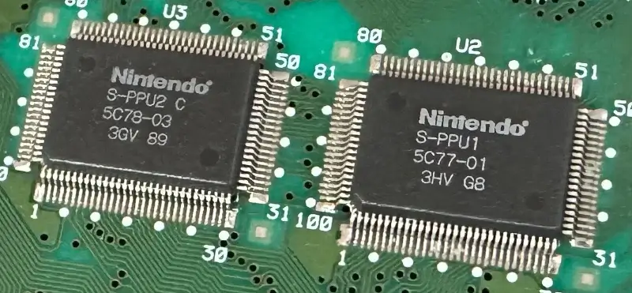
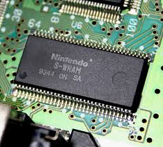
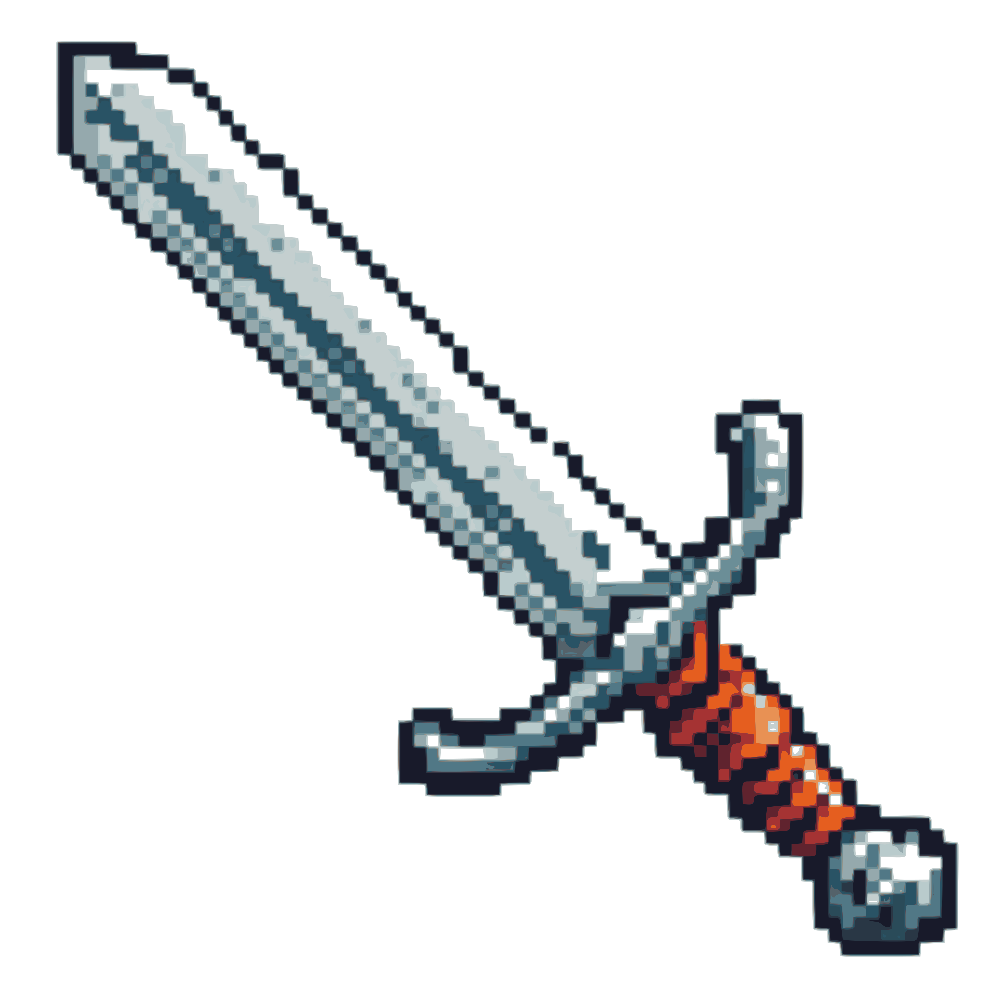

Frequência: 3,58 MHz (modo padrão, com variações dependendo das operações)
Descrição: O processador é o “cérebro” do SNES. Ele executa as instruções dos jogos, controla a memória e coordena os gráficos e o som. Embora 3,58 MHz possa parecer baixo para os padrões atuais, a arquitetura de 16 bits permitia um desempenho sólido para jogos de ação, RPGs e plataformas
Chips gráficos: S-PPU1 e S-PPU2
02

Resoluções suportadas: Horizontal: de 256 a 512 pixels Vertical: de 224 a 448 pixels
Paleta de cores: 3,58 MHz (modo padrão, com variações dependendo das operações)
Camadas (layers): Até 4 planos de fundo (backgrounds)
Modos gráficos: 8 modos gráficos diferentes Modo 7: rotação e escala em uma camada (usado em jogos como F-Zero, Super Mario Kart)
Memória RAM: 128KB ( Work RAM )
03

Tamanho: 128 KB (1 Mbit)
Localização: Integrada na placa-mãe do console
Função: Armazena dados temporários dos jogos durante a execução (como posições de personagens, variáveis, buffers de lógica de jogo, etc.)Usada pelo processador principal (Ricoh 5A22)
Acesso: Totalmente acessível pelo processador a 16 bits via mapeamento de memória (endereçamento de 24 bits)
Cartuchos Armazenamento de Jogos

04
Capacidade típica:2 Mbit a 48 Mbit (256 KB a 6 MB)
Máximo teórico:128 Mbit (16 MB), embora raramente usado
Coprocessadores possíveis nos cartuchos: Super FX: para gráficos 3D (Star Fox) SA-1: processador auxiliar rápido (Super Mario RPG) DSP-1: matemática vetorial (Pilotwings) S-DD1, CX4, ST-010, etc.: para compressão, física, inteligência artificial etc.